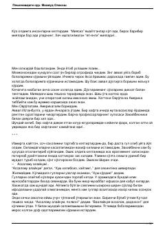

PNO'lim oldida hayotning haqiqiy ma'nosini izlagan ishbilarmon erkak hikoyasi.
Roman bosh qahramoni Saljoqbey miya shishi tashxisini olgach, atigi olti oy umri qolganini bilib, hayotga va atrofidagilarga yangicha ko'z bilan qaray boshlaydi. U oilasi, farzandlari va ishchilari bilan munosabatlarini qayta ko'rib chiqadi. Kitob insonning o'lim oldidagi ruhiy holati va hayotning haqiqiy qiymatini chuqur tasvirlaydi.